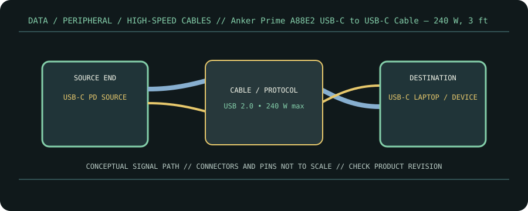

[ CABLE PRODUCT RECORD // ANKER PRIME USB-C TO USB-C CABLE (240 W, UPCYCLED-BRAIDED), A88E2 3 FT ]
Anker Prime A88E2 USB-C to USB-C Cable — 240 W, 3 ft
USB-C male ↔ USB-C male, braided charge/data cable. This entry documents the named product model, not a universal guarantee for all cables with the same connector.

CLASSIFICATION: Data, peripheral, and high-speed cables. Model-specific facts below are sourced; negotiated operation remains limited by the connected devices.
Interface and capability
| Product / protocol | Anker Prime USB-C to USB-C Cable (240 W, Upcycled-Braided), A88E2 3 ft. USB 2.0 data (up to 480 Mb/s); USB Power Delivery 3.1 EPR charging up to 240 W. |
|---|---|
| Connector type | USB-C male at both ends; identified Anker Prime A88E2 3 ft / approximately 0.9 m listing. |
| Electrical / length limits | 3 ft (0.9 m) variant; up to 240 W charging and USB 2.0 up to 480 Mb/s. Anker states this cable does not support video output. |
| Revision-specific compatibility | Use for charging and basic USB-C data sync. Its USB 2.0 protocol excludes USB4/Thunderbolt high-speed links and video/monitor Alt Mode, regardless of the USB-C connector. |
Compatibility & handling
- 240 W is the maximum negotiated cable capability, requiring an EPR-capable USB-PD charger and endpoint; actual system power may be lower.
- Anker explicitly limits data to USB 2.0 and excludes screen mirroring/video; do not use it as a display or high-speed dock cable.
- Keep the 3 ft A88E2 version distinct from other Anker Prime lengths/SKUs; record exact packaging identification.
Sources & further reading
- Anker — Prime USB-C to USB-C Cable, 3 ft, 240 W, A88E2Manufacturer page for 3 ft version, power, data and video limitations.
- USB-IF — USB 2.0 SpecificationUSB 2.0 data rate and protocol reference.
- USB-IF — USB Power DeliveryUSB Power Delivery and EPR charging framework.